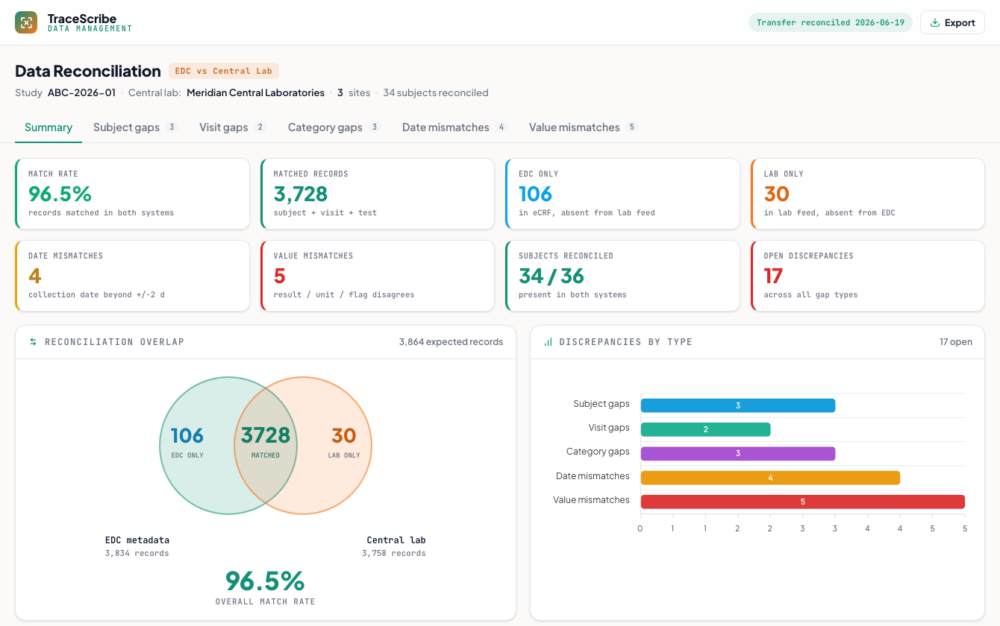

Data Reconciliation
Reconcile the site's EDC entries against the central lab's direct data transfer to catch discrepancies before database lock: missing subjects, visits, and panels, collection-date mismatches, and result disagreements. Modeled on the CDISC SDTM LB domain.
What it does
In most trials the site draws the sample and the central lab transmits its results straight to the sponsor, so two independent records of the same lab event exist and must be proven consistent. This dashboard compares the EDC export against the lab transfer, classifies every record as matched, EDC-only, or lab-only, and surfaces the discrepancies a data manager has to clear on every transfer and before lock.
How it works
- Joins records on USUBJID + VISIT + LBTESTCD (qualified by specimen), classifies matched / EDC-only / lab-only, and computes the overall match rate, shown as an EDC-vs-lab overlap.
- Subject, visit, and category gaps: a subject, an expected visit's draw, or a whole panel (LBCAT) present in one system but missing in the other (screen fail never transmitted, mis-keyed requisition, tube not drawn).
- Date mismatches: EDC collection date (LBDTC) vs the lab collection date beyond a configurable +/-2 day tolerance, flagged by severity, since a large delta can misassign a result to the wrong visit window.
- Value mismatches: where the site also transcribes a result, a disagreement in value, units, or reference-range flag (the central lab stays the system of record for results).
- By-site and by-category breakdowns plus aging buckets show where discrepancies concentrate and which are going stale.
The real tool (in TraceScribe2) ingests an EDC export plus a lab-vendor transfer and reconciles them. This demo is a self-contained, generalized recreation with synthetic CDISC-shaped data (real LBTESTCD / LBCAT / LBSPEC, ISO-8601 LBDTC); every figure is computed from the records, nothing is hard-coded.

Static preview - click to open the live, interactive demo